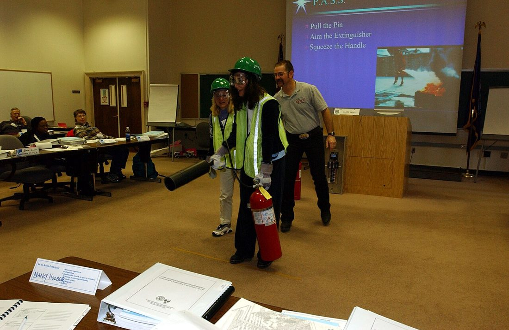

防災常被想成「一個人、一個家」的事，但真正的大災難裡，能第一時間救你的，往往不是救護車，而是隔壁的鄰居。當道路中斷、通訊癱瘓、官方救援被大量需求淹沒，一個平時就串起互助關係的社區，能撐住彼此。這篇教你怎麼把「一群互不相識的住戶」，變成「災難時互相照應的鄰里防災網」。

大規模災難的殘酷現實是：當所有人同時需要幫助，專業救援就不可能同時到位。道路可能中斷、通訊可能癱瘓、消防與醫療量能會被瞬間灌爆。災後最初數小時的搜救與救助，經驗上多數是由現場的鄰居與家人完成的——因為他們就在那裡。這也是為什麼，把家庭準備（〈家庭防災計畫〉）再往外延伸一層到「鄰里」，能救下最多人。
鄰里防災網的地基，是「彼此認識」。不必一步到位，從小處做起：
災難時能不能互助，取決於平時是否「知道誰有什麼」。把社區的能量造冊：
| 類別 | 盤點內容 |
|---|---|
| 專長人力 | 醫護、消防、水電、機具操作、急救、外語專長的住戶 |
| 物資設備 | 發電機、滅火器材、儲水儲糧、急救用品、無線電／收音機 |
| 可用空間 | 可當集合點或臨時收容的活動中心、地下室、空地 |
| 需協助者 | 獨居長者、身障者、孕婦、嬰幼兒、慢性病者、語言不通的住戶 |
把上述資訊畫成一張簡單的社區地圖：標出集合點、消防栓、滅火器、緊急出口、可能的危險源（瓦斯管、變電箱）與需優先協助的住戶位置。這張圖在混亂時，比任何長篇說明都好用。
災難對弱勢者的衝擊最大。一個好的鄰里網，會不讓任何人被遺漏：
資訊在災難中和物資一樣珍貴（辨識真假見〈資訊戰與假訊息辨識〉）：
災難發生後，依專長與現場需求快速分組，避免一窩蜂或無人負責：
互助網的形式要因地制宜，別硬套同一套：
| 社區型態 | 重點做法 |
|---|---|
| 集合式大樓 | 善用管委會與樓層群組，指定各樓層聯絡人、盤點避難空間（地下室、頂樓）與逃生梯 |
| 透天／街廓 | 以相鄰數戶為單位互相照應，共享工具與發電，約定一個街角會合點 |
| 鄉村／偏遠 | 距離遠、救援更慢，更需自主；盤點農機具、發電、車輛與具急救專長者 |
防災網不是「成立一次」就結束，而是靠平時的互動維繫。它可以很自然地融入日常：一次社區同樂會就是認識鄰居的機會、一次消防講習就是盤點資源的時機、一句「最近還好嗎」就是對獨居長者的守望。關係是慢慢養出來的——等到災難當天才想認識鄰居，已經太晚。把互助當成社區文化的一部分，它在關鍵時刻才會真的運作起來。定期（例如每年）辦一次簡單的防災演練或盤點更新，就能讓這張網保持有效。
再周全的個人準備，都有極限：你可能受傷、外出、或剛好缺了某項資源。但當整條街、整棟樓的人彼此認識、互相支援，個別的缺口就能被補上——你缺的水，鄰居有；你不會的急救，樓下的護理師會；你搬不動的傷患，大家一起抬。韌性從來不是單打獨鬥堆出來的，而是連結出來的。
大災難時官方量能被灌爆、可能無法立即到位，最初的搜救多由現場鄰里完成。
從認識鄰居、建立聯絡管道做起，盤點人力資源與需協助者，由少數熱心住戶逐步擴大。
專長人力（醫護水電）、物資設備（發電機、滅火器、儲水）、可用空間，以及需優先協助的弱勢住戶。
掌握名單、為每位指定守望夥伴優先確認安危與協助疏散，平時多關心、記下特殊需求。
依專長分：搜救、傷患照護、危險源處理、物資調度、對外聯繫，先清點安危再集中處理最急迫者。
※ 本文為一般社區防災參考，整理自內政部消防署、NCDR、Ready.gov 等公開資訊，不能取代官方即時指示。搜救與救助涉及高風險時，請以自身安全為先並儘速通報專業單位。